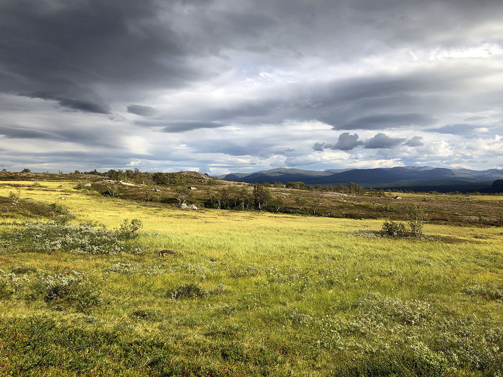

Vålådalen
Sedikit lebih jauh ke utara, di ujung jalan menuju Norwegia, Anda akan menemukan Cagar Alam Vålådalen. Hanya sedikit orang asing yang mengetahui daerah ini dan itu bagus, karena Anda akan bertemu sangat sedikit orang selain orang Swedia. Kami melakukan perjalanan empat hari di sini dan hampir hanya bertemu dengan orang Swedia yang sedang dalam perjalanan ke sini. Jika tidak ingin trekking, ada beberapa jalan kaki singkat yang bisa Anda tempuh di sini untuk tetap menikmati alam yang indah.
